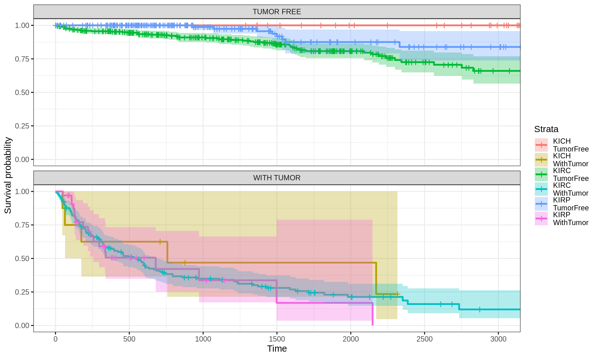

7 Survival Analysis
7.1 On this page
Biological insights and take-home messages are at the bottom of the page at section Lesson Learnt: Section 7.4.
- Here…
7.2 Survival Analysis: Overall Survival
Intro
Load data
we have these timepoints:
- overall survival (OS)
- disease-specific survival (DSS)
- disease-free interval (DFI)
- progression-free interval (PFI)
to that, we add info:
- vital status
- days to death
- cancer type
we will measure a Kaplan Meier curve and fit a Cox Proportional Hazards Model for each kidney cancer subtype only based on the observations and classification available in the metadata. Then, we will add the weights for Factors 1, 2 and 3 that we have calculated with the Factor Analysis (Chapter 6) on the integrated multi-omics datasets (transcriptomics, miRNAs, proteomics and epigenomics). We compare the results and we see if adding info from the multi-omics lead to a model that predicts better the clinical outcome.
7.2.1 Metadata only
let’s do it with metadat aonly first
7.2.1.1 Kaplan Meier
plot the survival
compare survival plots
log rank test
Call: survival::survdiff(formula = survival::Surv(OS.time, vital_status) ~ cancer_type, data = metadata)
n=885, 2 observations deleted due to missingness.
N Observed Expected (O-E)^2/E (O-E)^2/Vcancer_type=TCGA-KICH 65 9 26.0 11.14 12.87 cancer_type=TCGA-KIRC 531 174 140.4 8.04 21.18 cancer_type=TCGA-KIRP 289 44 60.6 4.54 6.26
Chisq= 23.9 on 2 degrees of freedom, p= 6e-06
As noted on this page the term (O-E)^2/V is the basis for the log-rank test.
To know if the difference between the observed and expected events (O-E) for one group is significantly different from 0 (that is, the two groups have significantly different hazard functions), you need an estimate of the variance of that difference in the case (null hypothesis) that the groups have the same hazard function.
7.2.1.2 Cox regression model
Cox proportional hazards regression is one of the most popular regression techniques for survival analysis. Other models can also be used since the Cox model requires important assumptions that need to be verified for an appropriate use such as the proportional hazards assumption: see references.
In a Cox proportional hazards regression model, the measure of effect is the hazard rate (HR), which is the risk of failure (or the risk of death in our example), given that the participant has survived up to a specific time. Usually, we are interested in comparing independent groups with respect to their hazards, and we use a hazard ratio, which is analogous to an odds ratio in the setting of multiple logistic regression analysis. The cox.ph() function from the survival package is used to fit the model. The function cox.zph() from survival package may be used to test the proportional hazards assumption for a Cox regression model fit.
NOTE: A probability must lie in the range 0 to 1. However, the hazard represents the expected number of events per one unit of time.
- If the hazard ratio for a predictor is close to 1 then that predictor does not affect survival,
- if the HR is less than 1, then the predictor is protective (i.e., associated with improved survival),
- and if the HR is greater than 1, then the predictor is associated with increased risk (or decreased survival).
[[[now we can add more covariates, but we have to check if the proportional hazard assumption holds true]]]
In another model we add more risk factors such as the source of infection and the number of days between date of onset and admission. This time, we first verify the proportional hazards assumption before going forward.
In this model, we have included a continuous predictor (days_onset_hosp). In this case we interpret the parameter estimates as the increase in the expected log of the relative hazard for each one unit increase in the predictor, holding other predictors constant. We first verify the proportional hazards assumption.
Forest plot
let’s add more covariates into the model
WE GET INFINITE COEFFICIEMT WITH RACE
Forest plot
Tumor stage “tumor_stage” Tumor histological grade “histological_grade” TMN main tumor pathology “pathologic_t” TMN lymph nodes metastatis “pathologic”
print chi squared tab
Forest plot
subtype_miRNA “Subtype_miRNA”, subtype_mRNA “Subtype_mRNA”, Subtype_selected “Subtype_Selected” Subtype_Immune_Model_Based
print chi squared tab
Forest plot

Forest plot
sssss
7.2.1.3 more modeling
we could model Tumor STage. other stages molecular subtypes <– here we can improve on them later with more fancy classifications
Sex “gdc_cases.demographic.gender_1_1” Disease status “cgc_follow_up_tumor_status_1_1” Tumor stage “cgc_case_pathologic_stage_1_1” Tumor histological grade “histological_grade” TMN main tumor pathology “cgc_case_pathologic_t_1_1” TMN lymph nodes metastatis “cgc_case_pathologic_n_1_1”
7.2.2 Multi-omics predictive model for clinical outcome
sssss
cox_fit
Likelihood ratio test=171.1 on 10 df, p=< 2.2e-16 n= 885, number of events= 227 (2 observations deleted due to missingness)
Plot Hazard-Ratio
Plot Kaplan-Meier
7.3 Survival Analysis: Progression-Free Interval (PFI)
7.3.1 Metadata only - progression-free interval (PFI)
let’s do it with metadat aonly first
7.3.1.1 Kaplan Meier
plot the survival

compare survival plots
log rank test
Call: survival::survdiff(formula = survival::Surv(OS.time, vital_status) ~ cancer_type, data = metadata)
n=885, 2 observations deleted due to missingness.
N Observed Expected (O-E)^2/E (O-E)^2/Vcancer_type=TCGA-KICH 65 9 26.0 11.14 12.87 cancer_type=TCGA-KIRC 531 174 140.4 8.04 21.18 cancer_type=TCGA-KIRP 289 44 60.6 4.54 6.26
Chisq= 23.9 on 2 degrees of freedom, p= 6e-06
As noted on this page the term (O-E)^2/V is the basis for the log-rank test.
To know if the difference between the observed and expected events (O-E) for one group is significantly different from 0 (that is, the two groups have significantly different hazard functions), you need an estimate of the variance of that difference in the case (null hypothesis) that the groups have the same hazard function.
7.3.1.2 Cox regression model
Cox proportional hazards regression is one of the most popular regression techniques for survival analysis. Other models can also be used since the Cox model requires important assumptions that need to be verified for an appropriate use such as the proportional hazards assumption: see references.
In a Cox proportional hazards regression model, the measure of effect is the hazard rate (HR), which is the risk of failure (or the risk of death in our example), given that the participant has survived up to a specific time. Usually, we are interested in comparing independent groups with respect to their hazards, and we use a hazard ratio, which is analogous to an odds ratio in the setting of multiple logistic regression analysis. The cox.ph() function from the survival package is used to fit the model. The function cox.zph() from survival package may be used to test the proportional hazards assumption for a Cox regression model fit.
NOTE: A probability must lie in the range 0 to 1. However, the hazard represents the expected number of events per one unit of time.
- If the hazard ratio for a predictor is close to 1 then that predictor does not affect survival,
- if the HR is less than 1, then the predictor is protective (i.e., associated with improved survival),
- and if the HR is greater than 1, then the predictor is associated with increased risk (or decreased survival).
[[[now we can add more covariates, but we have to check if the proportional hazard assumption holds true]]]
In another model we add more risk factors such as the source of infection and the number of days between date of onset and admission. This time, we first verify the proportional hazards assumption before going forward.
In this model, we have included a continuous predictor (days_onset_hosp). In this case we interpret the parameter estimates as the increase in the expected log of the relative hazard for each one unit increase in the predictor, holding other predictors constant. We first verify the proportional hazards assumption.
Forest plot

let’s add more covariates into the model
WE GET INFINITE COEFFICIEMT WITH RACE
Forest plot

Tumor stage “tumor_stage” Tumor histological grade “histological_grade” TMN main tumor pathology “pathologic_t” TMN lymph nodes metastatis “pathologic”
print chi squared tab
Forest plot
subtype_miRNA “Subtype_miRNA”, subtype_mRNA “Subtype_mRNA”, Subtype_selected “Subtype_Selected” Subtype_Immune_Model_Based
print chi squared tab
Forest plot

Forest plot
sssss
7.3.1.3 more modeling
we could model Tumor STage. other stages molecular subtypes <– here we can improve on them later with more fancy classifications
Sex “gdc_cases.demographic.gender_1_1” Disease status “cgc_follow_up_tumor_status_1_1” Tumor stage “cgc_case_pathologic_stage_1_1” Tumor histological grade “histological_grade” TMN main tumor pathology “cgc_case_pathologic_t_1_1” TMN lymph nodes metastatis “cgc_case_pathologic_n_1_1”

7.3.2 Multi-omics predictive model for clinical outcome
sssss
cox_fit
Likelihood ratio test=171.1 on 10 df, p=< 2.2e-16 n= 885, number of events= 227 (2 observations deleted due to missingness)
Plot Hazard-Ratio
Plot Kaplan-Meier

7.4 Lessons Learnt
[[[[PROPER DESCRIPTION OF FINDINGS AND TRANSCRIPTOMICS ENRICHMENTS]]]]
So far, we have learnt:
- A